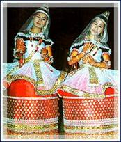
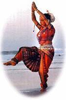

After introducing us to the intricacies of Kathakali, Bharata Natyam and Mohini Attam in the last three issues of the Palm Leaf, Mrs Gauri Menon now takes us to Eastern India.
Manipuri
Manipuri is a lyrical dance form hailing from the eastern regions of India. The origin is attributed to the vision of a king. In the sequestered land of Manipur surrounded by the Naga hills, there lived a Naga king in the 15th century who following a vision planned to propitiate the divine power and improve the lot of his subjects. What started as a folk dance changed into ritual and ceremonial dances as years rolled by. Later as a result of the interaction of several highly developed forms of ritual and religious dances and the Vaishnava cult, dances known as Rasa dance evolved giving predominance to the incidents in Shri Krishna Leela. This was in the 19th century. Unlike other Indian classical dances, facial expressions and abhinaya are totally absent but the dancers with their serpentine movements depict the sun, the moon, the stars or flowers in the form of dance patterns. Though the trend is Lasya, there is Thandava aspect as well when the male dancers perform the war-like rituals.
The major portion of the repertoire comprise five different types of ballets revolving round the theme of Radha, Krishna and Gopikas. The other groups of classical dances come under the title Sankeertanas performed generally by men. Typical Manipur drums (Pung) or cymbals (kartals) and or clapping help to keep the rhythm (thala). A variety of intricate rhythmic patterns are prayed on the drum and the cymbals.
In technique, Manipuri is distinct from other classical types. Feet are in front not out-turned, knees are relaxed though slightly bent forward - never flexed sideways, no out-turned positions of the thighs either. The whole body is turned into an imaginary figure of light with the upper chest and waist moving in opposition. The arms move as one unit - no sharp angles through elbow bending. The fingers move in circles, semicircles or curves folding and unfolding gradually.
The primary unit of movement is known as chali or the pareng on which the dance is built. In a programme the Nata Sankeerta generally precede the Rasa There are vigorous masculine techniques involving jumps and elevations.
Priests and priestesses perform special ritual dances in front of village deities culminating in trances. Maiba and Maibee are the names of such ritual types. Then there are ritual dances spreading over several days when it is known as Lai Haroda. Here the pattern is vigorous and of varying sections - the movements being performed to a repetitive melody on a bowed instrument - the Pana. The main dances are Khamba Thoibi - supposedly counterparts of Siva and Parvathi. Expressions are placid - that and the characteristic movements of the fingers suggest a closeness to South East Asian dance styles such as Balinese and Thai.
Odissi
Developed from the musical pray Sangeetha Nataka and the dances of gymnasiums known as the Akharas, Odissi is a close parallel to Bharata Natyam. Sculptural evidence relating to the style of dancing goes to 2nd century B.C., it is claimed. But inscriptions, manuscripts and other records speak of the prevalence of dance styles based on rituals of temples and entertainments of the village squares from 12th century onwards. The celebrated poetic work of the 12th century Gita Govinda dominated the musical content of the dance style.
In the early years, this dance was performed by women known as Maharis in the temple of Jagannath. Later, one hears of Gotipuas - men dressed as women performing these dances in the courtyards of temples. Odissi in its present form as a solo dance evolved out of air these - being revived once again during the last two decades.
Its technique is built around a basic motif in which the human body assumes the thrice deflected posture known as Tribhanga, reminiscent of ancient sculptures... waist and chest moving in counter or opposite ways. The repertoire comprises numbers built on pure Nrita design recalling the lovely sculptural poses carved in the Orissan temples. The poses are strung together within several meterical cycles or Thalas. The unit of movement is Arasa as distinct from Adavu of Bharata Natyam. At the outset there is an invocation to Ganesha ... the God who removes all obstacles... verses of the Gita Govinda and Oriya poetry providing the musical background. The dancer has scope to improvise within the Tala in the dance patterns. A talented dancer interprets the poetic line in a variety of ways to evolve a single mood, Samjukta Panigrahi is a great exponent of this classical style.